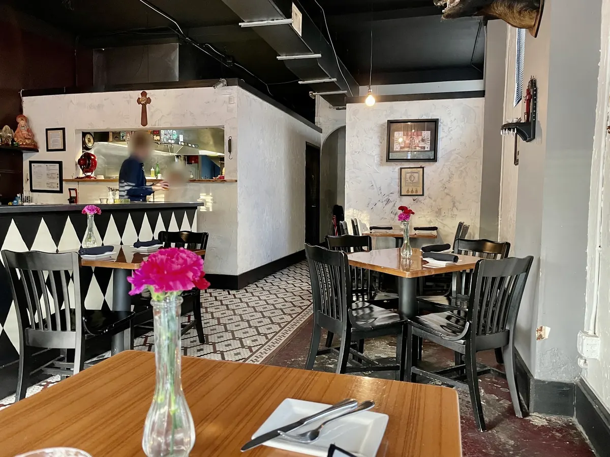
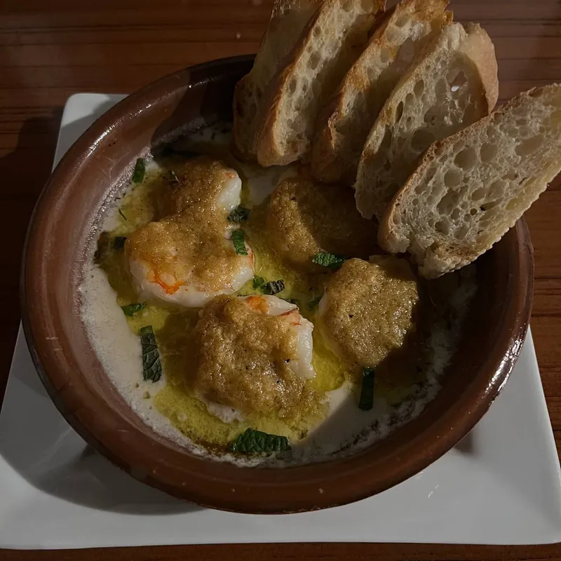
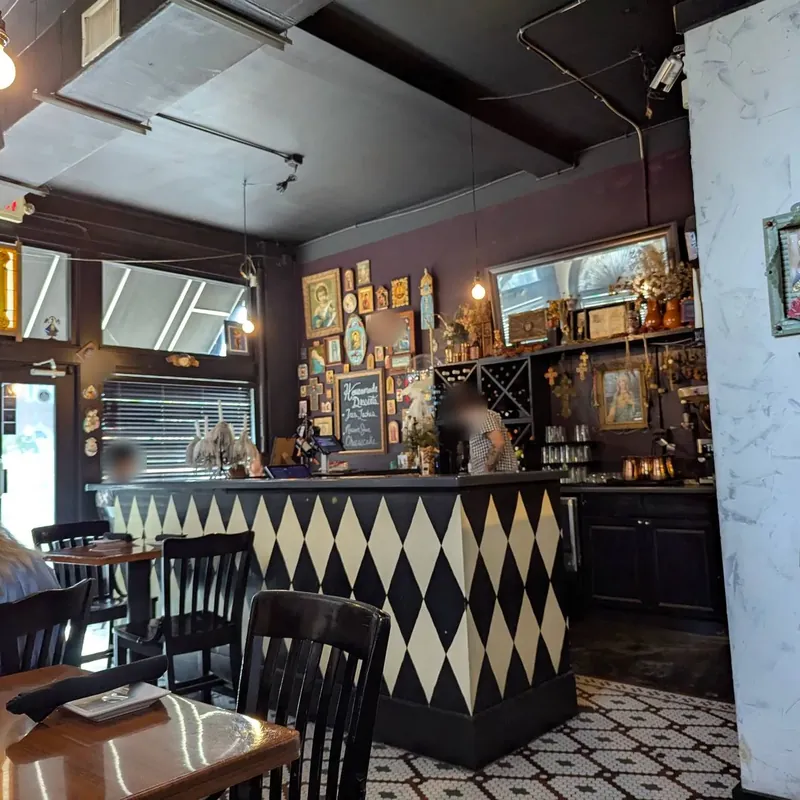
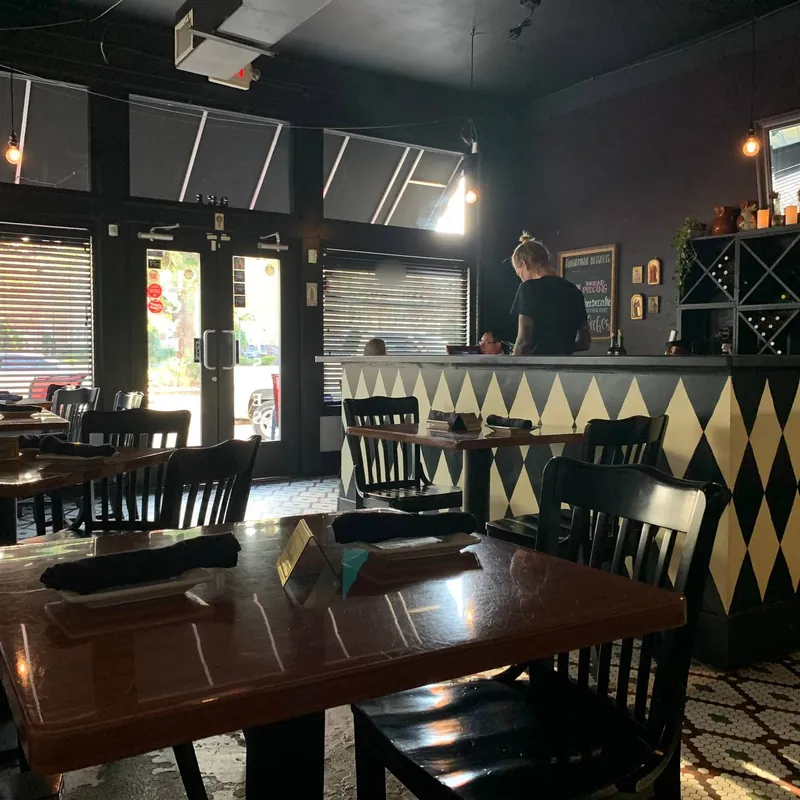
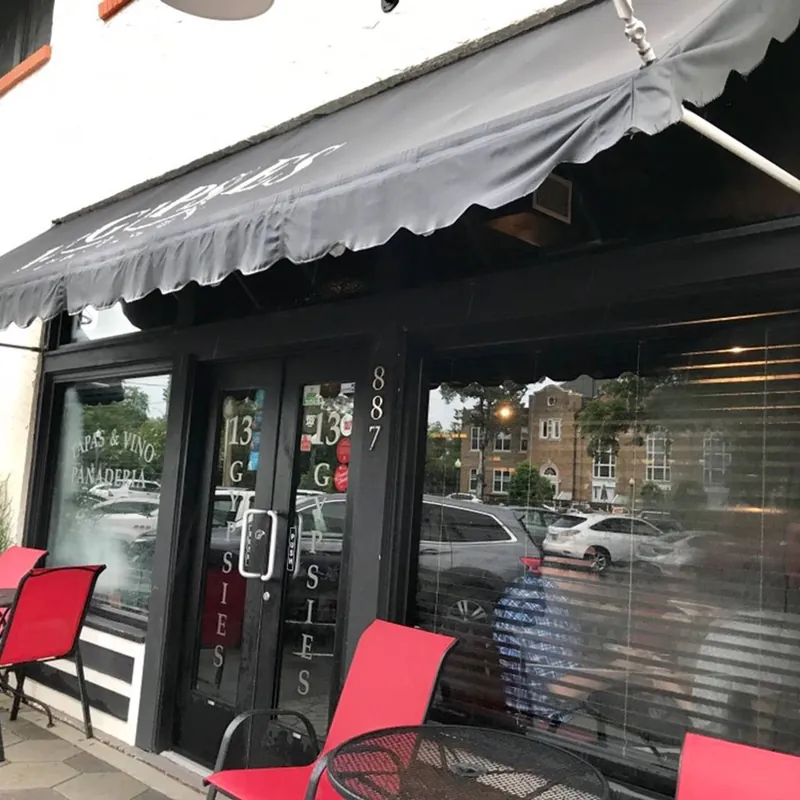

Tue – Thu 5 – 9 PM · Fri – Sat 5 – 10 PM887 Stockton St(904) 389-0330
Historic Riverside · Jacksonville
Seven tables. Twenty seats.
Nearly everything made by hand.
13 Gypsies is a small, intimate tapas room on the corner of College and Stockton. The kitchen cooks creative and classic Spanish dishes with Spanish technique, and makes almost everything itself, from the morning bread to the cheese, sausage and cured meats.
- 4.9OpenTable
691 reviews - 4.5Google
462 reviews - Best OverallOpenTable diners’
awards, Jacksonville - Romantic JacksonvilleThe Florida Times‑Union
February 2026
The house-made pantry
From scratch, every morning
The kitchen makes its own bread, cheese, sausage, cured meats, pickles, spice blends and fresh pasta. Five of them, in their own words.
- I
Bread
Every morning starts with bread, mixed in bowls, kneaded and shaped by hand. The kitchen owns no mixers.
- II
Cheese
Fresh cheese made in house. The ricotta comes with smoked honey and grilled peasant bread.
- III
Sausage
Fresh chorizo made in house, served with honey-sautéed pear and warm spiced dates.
- IV
The Chamber
True, in-house, handcrafted dry-cured meat, sliced and served with peasant bread.
- V
Pickled & fermented
Escabeche, pickled vegetables, house kimchi paste. Trimmings become charcuterie and desserts, so very little goes to waste.
Because everything is made fresh, a dish can run out during service. First come, first eat.

At the table
Small plates, shared slowly
- Tapas for the table
- Small plates made to share. Most tables order several and pass them around.
- Daily offerings
- A risotto of the day, cured meat From the Chamber, and the house peasant bread.
- Spanish wine, Florida beer
- The wine list leans Spanish. The beer is Florida local.
- Two sidewalk tables
- Under the awning on Stockton Street, with a sunset bonus.
The house
A 1923 room full of saints
13 Gypsies sits in a two-story Spanish-style building designed in 1923 by Henrietta Dozier, Jacksonville’s only female architect in the early part of the twentieth century. Inside: the original floor tile, a harlequin bar and walls of maximalist religious iconography.
In the kitchen, Chef Kevan Kimball and his crew run a true craft kitchen, with wines mainly from Spain and beer from Florida.
“If you start with good ingredients, preparation is minimal and the end result is good, honest food.”From the 13 Gypsies story


Private dining
Reserve the whole restaurant
Book all seven tables for an all-inclusive flat rate that covers food, alcohol and beverages, room rental, sales tax and gratuity.
Rehearsal dinners · Holiday parties · Birthdays
Every party is different, so the details are arranged by phone.
From our guests
4.9 on OpenTable from 691 diners4.5 on Google from 462 reviews
“Our favorite Jacksonville dining experience! The atmosphere is intimate, and the food is a must as a Jacksonville resident.”
“Some of the best risotto in Jacksonville. Great date night spot. It's small inside so make sure to make reservations.”
“Great bottles for great prices, really flavorful shareables you can’t find anywhere else in the area, and a very cozy setting.”
Reservations
Your table awaits
There are only seven tables, and none are held for walk-ins. Reservations are highly recommended.
Loading OpenTable availability…
- Last seating is an hour and a half before closing.
- The two sidewalk tables can’t always move inside if the weather turns.
- Larger party or the whole room? Call us.

Visit
On the corner of College & Stockton
Dinner Tuesday to Saturday from 5 PM
Address
887 Stockton St
Jacksonville, FL 32204
Historic Riverside, right off I‑10, in the same strip as Bold Bean and Zencog.
Hours
| Tuesday | 5 – 9 PM |
|---|---|
| Wednesday | 5 – 9 PM |
| Thursday | 5 – 9 PM |
| Friday | 5 – 10 PM |
| Saturday | 5 – 10 PM |
| Sunday | Closed |
| Monday | Closed |
Good to know
- Street parking nearby
- Casual dress, no pretense
- Gluten-free and vegetarian options
- Wheelchair-accessible entrance
- AMEX, Discover, Mastercard, Visa